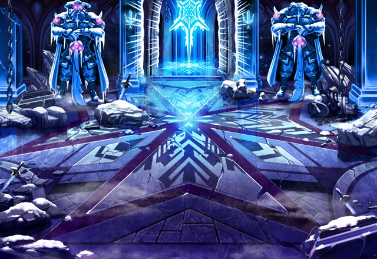

モーラ
この程度で倒れないでください。 私はまだすべての力を解放していませんよ。
セリア
Shou-chan、 もちろんアンタもまだ動けるわよね。
セリア
私がモーラに突撃して動きを止める。 アンタはその隙に攻撃して。
セリア
無茶でもやるしかないのよ。 アンタもティリスを助けたいんでしょう？
モーラ
何をやっても無駄です。 あなたたちの力では私は止められません。
？？？
慌てるんじゃねーよ。 ここにいるのはお前らだけか？
パリス
待たせてしまってごめんなさい。 ここからは私たちも戦うわ。
カル
俺たちが戻るまで無茶はするなって 言っただろう。
カル
まあ、セリアらしいって言えば セリアらしいけどな。
ルジーナ
俺が戻るまでこいつの足止めを しておけたんだからな。
ルジーナ
まさか、俺たちが戻ってくることを 想定してなかったわけじゃないんだろう？
ルジーナ
早く見せてみろよ。 お前の最後の策ってヤツをよ。
ルジーナ
まあ、どうせ“真の力”とかを 見せるだけだろうがなー。
モーラ
本来はあなたたちの他の邪魔者たちが 現れたら行うつもりでしたが
モーラ
偉大なる魔神の王たちにより 封じられた道よ。
モーラ
混沌たる破壊の神を 封じた地へと繋がる道よ。
モーラ
今、悠久の時を越え 魔神の王たる我が汝に命じる。
モーラ
我が前にその道を示せ。 メノンへと繋がるその道を。
モーラ
解き放て！ 破壊神への道を封じし我らが力とともに！
ルジーナ
いや、それだけじゃねー！ これはそんな簡単な話じゃねー！
モーラ
どうですか？ メノンへ繋がる道は見えましたか？
モーラ
……その様子では今の状況を 理解することもできなそうですね。
モーラ
あなたたちはカルナ・マスタの強大な力を わかっていなかったのです。
モーラ
私たちの力を２つに分けただけで あれを封じることなどできません。
モーラ
カルナ・マスタを封じるために 私たちは２つの力を犠牲にしたのです。
モーラ
もう１つはあれの肉体が残る地へと 繋がる道を封じるために。
モーラ
今、メノンへの道を開いたことで その内の１つの力が復活した。
モーラ
とはいえ、もう１つの力は 未だ封じられたまま。
モーラ
私たち魔神の本来の力には遠く及びませんが あなたたちを消すには十分なようですね。
ルジーナ
クソッ…これほどの力だったのかよ……。 マズイな……。
モーラ
そうすれば、 あなたの命だけは助けてあげます。
セリア
モーラ…ゴメン……。 私は…私の信じた道を進む……。
カル
俺の中に流れる魔神の血よ！ 目覚めてみろよ！
モーラ
……バリュオンの血を引く者。 それだけでは力は扱えません。
モーラ
力を扱えない自分を呪いながら 死になさい。
モーラ
小賢しい猿が何かする前に 消しておくに限りますね。
モーラ
まだ抵抗しますか？ と聞いても無駄なのでしょうね。
パリス
グッ……私にはまだやりたいことが……。 こんな所で私は……。
パリス
Shou-chan、 イチかバチか２人で……。
モーラ
無駄と言ったでしょう。 今の私を相手に偶然などありません。
モーラ
Shou-chan、あなたも わかっているのでしょう？
モーラ
ここには他の人間たちの気配も無い。 あなたを助けてくれる者はもういない。
ティリス
Shou-chanを あなたなんかにやらせはしない！
ティリス
話したいことはいっぱいあるけど 今はモーラを倒さないと！
モーラ
グッ…力が……。 おとなしく私に従いなさい！
ティリス
モーラの力を封じたことで 他の魔神の力が暴走してる！